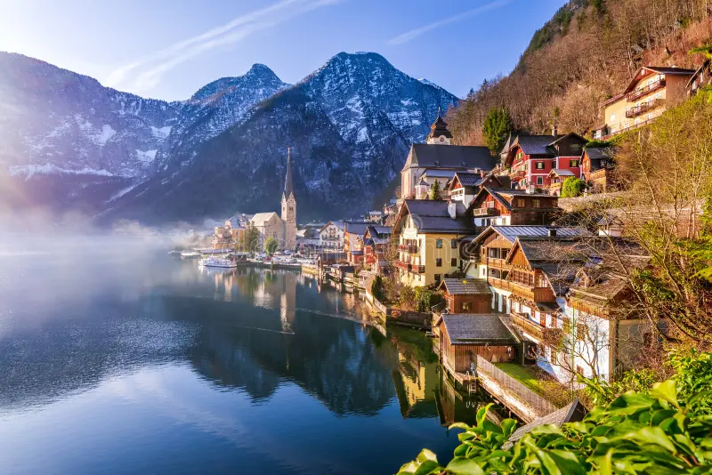

Explora Austria
Conoce la historia, cultura, gastronomía y más...
Bienvenido a la página dedicada a Austria. Este país es famoso por sus impresionantes paisajes alpinos, su rica tradición musical y su deliciosa gastronomía. ¡Explora todo lo que Austria tiene para ofrecer!
Turismo

Austria es conocida por sus paisajes alpinos y su música clásica. Viena, con su Palacio de Schönbrunn y la ópera, y Salzburgo, la ciudad natal de Mozart, son los principales atractivos.
Geografía
La mayoría del país está cubierto por los Alpes. Austria tiene numerosos lagos como el Neusiedler See y el Wolfgangsee.
Gastronomía
Platos tradicionales incluyen el schnitzel austriaco, el strudel de manzana y el apfelstrudel. El vino austriaco también es de renombre.
Da clic aquí